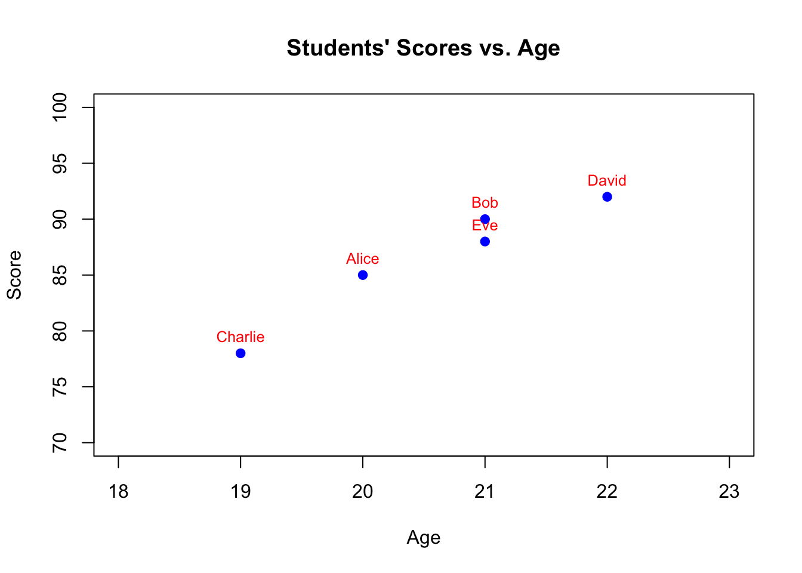

Code
x <- 5
if (x > 3) {
print("x is greater than 3")
}[1] "x is greater than 3"Lifeng Ren
September 7, 2023
useful_tools folder is now available on GitHub
Solution for lecture 1’s project is available: lec1_projsol.R
Any Questions? Comments? Suggestions?
Basic data types in R
Matrix/Linear Algebra calculation in R
Basic data structures in R
Basic data access and results print
In this lecture, we will delve into the following topics:
Control structures
if, else, ifelse)for, while, repeat, break, next)Functions:
apply family of functions (lapply, sapply, tapply, etc.)Library and Packages
Data Manipulation
basetidyversedata.tableStarting from this lecture, we will spend more time to practice and code than lecturing.
R script with your name from scratch for today.
lec1_stu.RDownload lec2.Rmd and Knit it to html
| Control Structure | Type | Description |
|---|---|---|
if |
Conditional Statement | Executes a block of code only if the specified condition is true. |
else |
Conditional Statement | Executes a block of code if the preceding if condition is false. |
ifelse |
Conditional Statement | Vectorized alternative to if and else statements; useful for applying conditions on vectors. |
for |
Loop | Iterates over a sequence or vector. |
while |
Loop | Continuously executes a block of code as long as the specified condition remains true. |
repeat |
Loop | Executes a block of code indefinitely until a break statement is encountered. |
break |
Loop Control | Exits the loop completely. |
next |
Loop Control | Skips the rest of the current iteration in a loop and moves to the next iteration. |
if Statementelse Statementif condition is false.ifelse Functionif and else statements. Useful when working with vectors.for Loopfor Loops: Matrix Iteration with Missing ValuesLet’s create a \(10 \times 10\) matrix such that:
NA (missing value).R Code:
# Initializing a 10x10 matrix with zeros
M <- matrix(0, nrow=10, ncol=10)
# Using nested for loops to populate the matrix with our conditions
for (i in 1:10) {
for (j in 1:10) {
# Compute the basic product
M[i, j] <- i * j
# If we're on the diagonal, set the value to NA
if (i == j) {
M[i, j] <- NA
}
# If the sum of the row and column index is even (and we're off the diagonal)
else if ((i + j) %% 2 == 0) {
M[i, j] <- M[i, j] / 2
}
# If the sum of the row and column index is odd (and we're off the diagonal)
else if ((i + j) %% 2 == 1) {
M[i, j] <- M[i, j]^2
}
}
}
# Printing the matrix
print(M) [,1] [,2] [,3] [,4] [,5] [,6] [,7] [,8] [,9] [,10]
[1,] NA 4 1.5 16 2.5 36 3.5 64 4.5 100
[2,] 4.0 NA 36.0 4 100.0 6 196.0 8 324.0 10
[3,] 1.5 36 NA 144 7.5 324 10.5 576 13.5 900
[4,] 16.0 4 144.0 NA 400.0 12 784.0 16 1296.0 20
[5,] 2.5 100 7.5 400 NA 900 17.5 1600 22.5 2500
[6,] 36.0 6 324.0 12 900.0 NA 1764.0 24 2916.0 30
[7,] 3.5 196 10.5 784 17.5 1764 NA 3136 31.5 4900
[8,] 64.0 8 576.0 16 1600.0 24 3136.0 NA 5184.0 40
[9,] 4.5 324 13.5 1296 22.5 2916 31.5 5184 NA 8100
[10,] 100.0 10 900.0 20 2500.0 30 4900.0 40 8100.0 NAThis example introduces:
Matrix Diagonal Manipulation: By setting diagonal elements to NA, we simulate scenarios like missing data in real-world datasets.
Conditional Operations: By halving or squaring based on the sum of indices, we introduce condition-based operations, which are typical in data manipulations.
while Looprepeat Loopbreak statement is encountered.break and nextbreak: Exits the loop completely.next: Skips the rest of the current iteration and moves to the next one.[1] 1
[1] 3
[1] 5
[1] 7Question 1: Basic if Condition
Part (a) - In Class:
Given a number \(x\), write an R script to check if \(x\) is positive. If it is positive, print “Positive”.
Part (b) - Take Home:
Extend the script from part (a) to also check for negative numbers and zeros. If \(x\) is negative, print “Negative”, and if \(x\) is zero, print “Zero”.
Question 2: Using ifelse with Vectors
Part (a) - In Class:
Given a vector \(v = \text{c}(2, 4, 6, 8, 10)\), use ifelse to classify each number as “Multiple of 3” or “Not a multiple of 3”.
Part (b) - Take Home:
Given a vector \(v\) containing numbers from 1 to 10, use ifelse to label each number as “Prime” or “Not Prime”.
Question 3: Basic Loop Operations
Part (a) - In Class:
Write a for loop to print the first five even numbers.
Part (b) - Take Home:
Use a while loop to do the same thing, but this time, print the first five odd numbers.
Challenging Exercise: Understanding and Manipulating the Variance-Covariance Matrix
Background:
A variance-covariance matrix provides valuable insights into the relationships between multiple variables in a dataset. By understanding its structure and properties, you can derive important conclusions about the data’s underlying patterns.
Notations:
Variance:
The variance of the \(j^{th}\) variable is:
\[ \text{Var}(X_j) = \frac{1}{n-1} \sum_{i=1}^{n} (X_{ij} - \bar{X}_j)^2 \]
Covariance:
The covariance between the $ j^{th} $ variable and the $ k^{th} $ variable is:
\[ \text{Cov}(X_j, X_k) = \frac{1}{n-1} \sum_{i=1}^{n} (X_{ij} - \bar{X}_j)(X_{ik} - \bar{X}_k) \]
Variance-Covariance Matrix:
The variance-covariance matrix \(\Sigma\) for a dataset with \(p\) variables is a \(p \times p\) matrix where each element \(\Sigma_{jk}\) is:
Mathematically, the matrix is represented as:
\[ \Sigma = \begin{bmatrix} \text{Var}(X_1) & \text{Cov}(X_1, X_2) & \dots & \text{Cov}(X_1, X_p) \\ \text{Cov}(X_2, X_1) & \text{Var}(X_2) & \dots & \text{Cov}(X_2, X_p) \\ \vdots & \vdots & \ddots & \vdots \\ \text{Cov}(X_p, X_1) & \text{Cov}(X_p, X_2) & \dots & \text{Var}(X_p) \\ \end{bmatrix} \]
Where the diagonal elements represent variances of each variable, and off-diagonal elements represent the covariances between different pairs of variables.
Task:
Given the dataframe:
Perform the following tasks:
cov() function. And then compare your results with the matrix using cov function.Solution for Question 1: Basic if Condition
Part (a) - In Class:
Part (b) - Take Home:
Solution for Question 2: Using ifelse with Vectors
Part (a) - In Class:
v <- c(2, 4, 6, 8, 10)
result <- ifelse(v %% 3 == 0, "Multiple of 3", "Not a multiple of 3")
print(result)Part (b) - Take Home:
v <- 1:10
is_prime <- function(n) {
if (n <= 1) return(FALSE)
for (i in 2:sqrt(n)) {
if (n %% i == 0) return(FALSE)
}
return(TRUE)
}
result <- ifelse(sapply(v, is_prime), "Prime", "Not Prime")
print(result)Solution for Question 3: Basic Loop Operations
Part (a) - In Class:
Part (b) - Take Home:
[1] 1
[1] 3
[1] 5
[1] 7
[1] 9Solution for Challanging Question
Given the dataframe:
Perform the following tasks:
Manually compute the variance-covariance matrix:
# Calculate the mean of each variable
mean_values <- c(mean(df$A, na.rm=TRUE), mean(df$B, na.rm=TRUE), mean(df$C, na.rm=TRUE))
# Create a matrix to store the variance-covariance matrix
myvcov_df <- matrix(0, nrow=3, ncol=3)
# Iterate over each variable
for (i in 1:3) {
# Extract the mean of the current variable
mean_i <- mean_values[i]
# Iterate over each other variable
for (j in 1:3) {
# Extract the mean of the other variable
mean_j <- mean_values[j]
# Calculate the covariance between the current variable and the other variable
cov_ij <- sum((df[[i]] - mean_i) * (df[[j]] - mean_j)) / (length(df[[i]]) - 1)
# Store the covariance in the variance-covariance matrix
myvcov_df[i, j] <- cov_ij
}
}
# Print the variance-covariance matrix
print(myvcov_df) [,1] [,2] [,3]
[1,] 9 9 9
[2,] 9 9 9
[3,] 9 9 9Then, we use with R’s built-in function: cov:
# Calculate the variance of each variable
var_a <- var(df$A)
var_b <- var(df$B)
var_c <- var(df$C)
# Calculate the covariance between each pair of variables
cov_ab <- cov(df$A, df$B)
cov_ac <- cov(df$A, df$C)
cov_bc <- cov(df$B, df$C)
# Create the variance-covariance matrix
vcov_df <- matrix(c(var_a, cov_ab, cov_ac,
cov_ab, var_b, cov_bc,
cov_ac, cov_bc, var_c), nrow=3, ncol=3)
# Print the variance-covariance matrix
print(vcov_df) [,1] [,2] [,3]
[1,] 9 9 9
[2,] 9 9 9
[3,] 9 9 9 A B C
A 9 9 9
B 9 9 9
C 9 9 9We’ve been using a lot of built-in functions already. For example: mean(), sum(), print()…
# Create a sample data frame
students <- data.frame(
Name = c("Alice", "Bob", "Charlie", "David", "Eve"),
Age = c(20, 21, 19, 22, 21),
Score = c(85, 90, 78, 92, 88)
)
# Plot ages against scores
plot(students$Age, students$Score,
main="Students' Scores vs. Age",
xlab="Age",
ylab="Score",
pch=19,
col="blue",
xlim=c(18,23),
ylim=c(70,100))
# Label each point with the student's name
text(students$Age, students$Score, labels=students$Name, pos=3, cex=0.8, col="red")
Custom functions allow users to encapsulate a series of commands into a single command, making code more modular and easier to read.
The general format for creating a custom function in R is:
# Custom function to process and return results in a data frame
process_scores <- function(ages, names, scores) {
if (length(ages) != length(names) || length(names) != length(scores)) {
stop("All input vectors must have the same length!")
}
# Create a data frame from the input vectors
data <- data.frame(Name = names, Age = ages, Score = scores)
# Calculate the average score
average_score <- mean(scores)
# Filter data for people with scores above the average
above_average <- data[data$Score > average_score, ]
return(above_average)
}
# Example usage
names <- c("Alice", "Bob", "Charlie", "David")
ages <- c(24, 30, 27, 22)
scores <- c(85, 90, 88, 86)
result <- process_scores(ages, names, scores)
print(result) Name Age Score
2 Bob 30 90
3 Charlie 27 88One classic example that’s a step up from the Fibonacci sequence is the calculation of the factorial of a number using recursion. However, to make it a tad more challenging while still being understandable, let’s create a recursive function to compute the “Tribonacci” sequence.
The Tribonacci sequence is similar to Fibonacci, but instead of the sum of the last two numbers to get the next number, it takes the sum of the last three.
Here’s the sequence for reference: \[ T_0 = 0, T_1 = 0, T_2 = 1, T_3 = 1, T_4 = 2, T_5 = 4, T_6 = 7, \dots \]
The function to calculate the \(n\)th number in the Tribonacci sequence is:
The 5 th number in the Tribonacci sequence is: 4The tribonacci function works by recursively calling itself to calculate the \(n-1\), \(n-2\), and \(n-3\) values in the sequence until it reaches the base cases where \(n\) is 0, 1, or 2.
The apply family of functions in R provides a way to avoid explicit loops in code, making operations faster and code more concise.
See a complete syntax table in Appendix.
lapply()sapply()tapply()$A
$A$mean
[1] 83.66667
$A$sd
[1] 5.131601
$B
$B$mean
[1] 91
$B$sd
[1] 1.414214Note: There are other functions in the apply family such as mapply(), vapply(), etc. However, the above are some of the most commonly used ones.
Question 1: Built-in Functions
a) In-Class:
Given a vector x = c(5, 12, 13, 7, 2, 8), use a built-in function to find the mean of the vector. What is the mean value?
b) Take Home:
For the same vector x, find the median, the minimum value, and the maximum value. Can you also determine the index positions of the minimum and maximum values?
Question 2: Customized Functions
a) In-Class:
Write a function named area_of_rectangle that takes in the length and breadth of a rectangle as arguments and returns its area. What is the area of a rectangle with length = 5 units and breadth = 3 units?
b) Take Home:
Modify the above function to also compute the perimeter of the rectangle. The function should now return both the area and perimeter. Use your modified function to find the area and perimeter of a rectangle with length = 6 units and breadth = 4 units.
Question 3: Apply Family
a) In-Class:
Given a list my_list = list(a = 1:5, b = 6:10, c = 11:15), use an appropriate function from the apply family to find the sum of each vector within the list.
b) Take Home:
For the same list my_list, use a function from the apply family to find the mean of each vector within the list. Then, create a named vector where names are the list element names (a, b, c) and the values are the means you just computed.
Question 4: Advanced Custom Function with Recursion (Challenging)
Create a custom function named recursive_sum that takes in a numeric vector. The function should:
recursive_sum on each half. Return the sum of the results of the two halves.Now, within the analyze_data function:
recursive_sum function to compute the sum of the numeric vector.Test both functions with a vector of your choice.
a) In-Class:
b) Take Home:
[1] "Median: 7.5"[1] "Minimum Value: 2 at index 5"[1] "Maximum Value: 13 at index 3"Solution for Question 2: Customized Functions
a) In-Class:
[1] 15b) Take Home:
$Area
[1] 24
$Perimeter
[1] 20Solution for Question 3: Apply Family
a) In-Class:
$a
[1] 15
$b
[1] 40
$c
[1] 65b) Take Home:
a b c
3 8 13 Solution for Question 4: Advanced Custom Function with Recursion
recursive_sum <- function(vec) {
if (length(vec) == 1) {
return(vec)
} else {
mid = length(vec) %/% 2
left_half = vec[1:mid]
right_half = vec[(mid+1):length(vec)]
return(recursive_sum(left_half) + recursive_sum(right_half))
}
}
analyze_data <- function(vec) {
basic_stats = list(
Mean = mean(vec),
Median = median(vec),
StdDev = sd(vec),
Variance = var(vec)
)
Q1 = quantile(vec, 0.25)
Q3 = quantile(vec, 0.75)
IQR = Q3 - Q1
lower_bound = Q1 - 1.5 * IQR
upper_bound = Q3 + 1.5 * IQR
outliers = vec[vec < lower_bound | vec > upper_bound]
sum_recursive = recursive_sum(vec)
return(list(Stats = basic_stats, Outliers = outliers, Sum = sum_recursive))
}
# Test
test_vec = c(1,2,3,4,5,6,7,8,9,10,50)
result = analyze_data(test_vec)
print(result)$Stats
$Stats$Mean
[1] 9.545455
$Stats$Median
[1] 6
$Stats$StdDev
[1] 13.72125
$Stats$Variance
[1] 188.2727
$Outliers
[1] 50
$Sum
[1] 105In this section, we are going to learn the data manipulation from libarary base, tidyverse, and data.table.
This is why people like me using R other than STATA to do the first-round of data cleaning and data preparation. You will spend a lot of time on this. So, today is just a start on this.
In R, the fundamental units of shareable code are called packages. A package bundles together code, data, documentation, and tests, and they can be shared with others as a single unit. When a package is used in an R script, it provides new functions, data, and documentation.
What is a Package?
devtools package.Once a package is installed, it must be loaded into the session to be used.
Note: library() and require() are two functions to load packages. library() stops if the package is not found, while require() gives a warning and returns FALSE.
Packages are updated frequently. To get the latest version:
If you load several packages, they can mask each other’s functions. To prevent this, you can detach packages.
To see a list of all your installed packages:
sessionInfo() to get information about the current R session, including loaded packages.Note: Using packages in R is essential for effective data analysis. They provide tools and methods that simplify complex tasks and improve the capability of R. Always remember to check the package documentation and keep them updated.
The base R system provides a range of functions for manipulating data. While they may not be as intuitive or concise as some of the other packages, understanding base R data manipulation is foundational.
[, [[, and $ to extract subsets of data.Example:
order(): Returns a permutation which rearranges its first argument into ascending or descending order.Example:
merge(): Merges two data frames by common columns or row names.Example:
The Tidyverse is a collection of R packages designed for data science. One of its core packages is dplyr, which provides functions for data manipulation.
select(): Choose columns.filter(): Choose rows based on values.mutate(): Add or modify columns.arrange(): Sort the data.summarize(): Collapse data into a summary.%>%: Allows for chaining commands, making code more readable.Example:
left_join(), right_join(), inner_join(), and full_join().Example:
Name Age Score
1 Alice 25 85
2 Bob 30 90
3 Charlie 29 NAThe data.table package provides an enhanced version of data.frame that allows for fast and memory-efficient operations.
DT[i, j, by]: A simple syntax where i is for row subsetting, j for column operations, and by for grouping.Example:
[.data.table syntax.Example:
setkey(), setorder(), and others that modify data by reference, making them very fast.Example:
Note: While base R provides the foundational understanding of data manipulation, dplyr (from Tidyverse) and data.table offer more concise and, often, faster approaches. Knowing all three methods can be beneficial depending on the context and specific needs of a data manipulation task.
Question 1: Base R - Data Manipulation
a) In-Class:
Using the built-in dataset mtcars, subset the data to only include cars (row.names) that have a miles-per-gallon (mpg) value greater than 25 and display the results.
b) Take Home:
For the same mtcars dataset, sort the cars based on their horsepower (hp) in descending order. How does the sorted dataset look?
Question 2: Tidyverse (dplyr) - Data Transformation
a) In-Class:
Load the dplyr package and use the filter() function to select rows from the iris dataset where Sepal.Length is greater than 5 and Species is “setosa”.
b) Take Home:
Using the mutate() function, add a new column to the iris dataset called Sepal.Ratio which is the ratio of Sepal.Length to Sepal.Width. Display the first 10 rows of the updated dataset.
Question 3: data.table - Fast Data Manipulation
a) In-Class:
Convert the built-in dataset airquality to a data.table object. Then, filter the rows to only include observations from the month of May (Month == 5).
b) Take Home:
Group the airquality data by Month and calculate the average temperature (Temp) for each month. Which month had the highest average temperature?
Question 4: Advanced Manipulation (Challenging)
Using the diamonds dataset from the ggplot2 package:
data.table object.cut of “Premium” or “Ideal”.price_per_carat which is the ratio of price to carat.color of diamond, determine the average price_per_carat.Solution for Question 1: Base R - Data Manipulation
a) In-Class:
mpg cyl disp hp drat wt qsec vs am gear carb
Fiat 128 32.4 4 78.7 66 4.08 2.200 19.47 1 1 4 1
Honda Civic 30.4 4 75.7 52 4.93 1.615 18.52 1 1 4 2
Toyota Corolla 33.9 4 71.1 65 4.22 1.835 19.90 1 1 4 1
Fiat X1-9 27.3 4 79.0 66 4.08 1.935 18.90 1 1 4 1
Porsche 914-2 26.0 4 120.3 91 4.43 2.140 16.70 0 1 5 2
Lotus Europa 30.4 4 95.1 113 3.77 1.513 16.90 1 1 5 2b) Take Home:
mpg cyl disp hp drat wt qsec vs am gear carb
Maserati Bora 15.0 8 301.0 335 3.54 3.570 14.60 0 1 5 8
Ford Pantera L 15.8 8 351.0 264 4.22 3.170 14.50 0 1 5 4
Duster 360 14.3 8 360.0 245 3.21 3.570 15.84 0 0 3 4
Camaro Z28 13.3 8 350.0 245 3.73 3.840 15.41 0 0 3 4
Chrysler Imperial 14.7 8 440.0 230 3.23 5.345 17.42 0 0 3 4
Lincoln Continental 10.4 8 460.0 215 3.00 5.424 17.82 0 0 3 4
Cadillac Fleetwood 10.4 8 472.0 205 2.93 5.250 17.98 0 0 3 4
Merc 450SE 16.4 8 275.8 180 3.07 4.070 17.40 0 0 3 3
Merc 450SL 17.3 8 275.8 180 3.07 3.730 17.60 0 0 3 3
Merc 450SLC 15.2 8 275.8 180 3.07 3.780 18.00 0 0 3 3
Hornet Sportabout 18.7 8 360.0 175 3.15 3.440 17.02 0 0 3 2
Pontiac Firebird 19.2 8 400.0 175 3.08 3.845 17.05 0 0 3 2
Ferrari Dino 19.7 6 145.0 175 3.62 2.770 15.50 0 1 5 6
Dodge Challenger 15.5 8 318.0 150 2.76 3.520 16.87 0 0 3 2
AMC Javelin 15.2 8 304.0 150 3.15 3.435 17.30 0 0 3 2
Merc 280 19.2 6 167.6 123 3.92 3.440 18.30 1 0 4 4
Merc 280C 17.8 6 167.6 123 3.92 3.440 18.90 1 0 4 4
Lotus Europa 30.4 4 95.1 113 3.77 1.513 16.90 1 1 5 2
Mazda RX4 21.0 6 160.0 110 3.90 2.620 16.46 0 1 4 4
Mazda RX4 Wag 21.0 6 160.0 110 3.90 2.875 17.02 0 1 4 4
Hornet 4 Drive 21.4 6 258.0 110 3.08 3.215 19.44 1 0 3 1
Volvo 142E 21.4 4 121.0 109 4.11 2.780 18.60 1 1 4 2
Valiant 18.1 6 225.0 105 2.76 3.460 20.22 1 0 3 1
Toyota Corona 21.5 4 120.1 97 3.70 2.465 20.01 1 0 3 1
Merc 230 22.8 4 140.8 95 3.92 3.150 22.90 1 0 4 2
Datsun 710 22.8 4 108.0 93 3.85 2.320 18.61 1 1 4 1
Porsche 914-2 26.0 4 120.3 91 4.43 2.140 16.70 0 1 5 2
Fiat 128 32.4 4 78.7 66 4.08 2.200 19.47 1 1 4 1
Fiat X1-9 27.3 4 79.0 66 4.08 1.935 18.90 1 1 4 1
Toyota Corolla 33.9 4 71.1 65 4.22 1.835 19.90 1 1 4 1
Merc 240D 24.4 4 146.7 62 3.69 3.190 20.00 1 0 4 2
Honda Civic 30.4 4 75.7 52 4.93 1.615 18.52 1 1 4 2Solution for Question 2: Tidyverse (dplyr) - Data Transformation
a) In-Class:
Sepal.Length Sepal.Width Petal.Length Petal.Width Species
1 5.1 3.5 1.4 0.2 setosa
2 5.4 3.9 1.7 0.4 setosa
3 5.4 3.7 1.5 0.2 setosa
4 5.8 4.0 1.2 0.2 setosa
5 5.7 4.4 1.5 0.4 setosa
6 5.4 3.9 1.3 0.4 setosa
7 5.1 3.5 1.4 0.3 setosa
8 5.7 3.8 1.7 0.3 setosa
9 5.1 3.8 1.5 0.3 setosa
10 5.4 3.4 1.7 0.2 setosa
11 5.1 3.7 1.5 0.4 setosa
12 5.1 3.3 1.7 0.5 setosa
13 5.2 3.5 1.5 0.2 setosa
14 5.2 3.4 1.4 0.2 setosa
15 5.4 3.4 1.5 0.4 setosa
16 5.2 4.1 1.5 0.1 setosa
17 5.5 4.2 1.4 0.2 setosa
18 5.5 3.5 1.3 0.2 setosa
19 5.1 3.4 1.5 0.2 setosa
20 5.1 3.8 1.9 0.4 setosa
21 5.1 3.8 1.6 0.2 setosa
22 5.3 3.7 1.5 0.2 setosab) Take Home:
Sepal.Length Sepal.Width Petal.Length Petal.Width Species Sepal.Ratio
1 5.1 3.5 1.4 0.2 setosa 1.457143
2 4.9 3.0 1.4 0.2 setosa 1.633333
3 4.7 3.2 1.3 0.2 setosa 1.468750
4 4.6 3.1 1.5 0.2 setosa 1.483871
5 5.0 3.6 1.4 0.2 setosa 1.388889
6 5.4 3.9 1.7 0.4 setosa 1.384615
7 4.6 3.4 1.4 0.3 setosa 1.352941
8 5.0 3.4 1.5 0.2 setosa 1.470588
9 4.4 2.9 1.4 0.2 setosa 1.517241
10 4.9 3.1 1.5 0.1 setosa 1.580645Solution for Question 3: data.table - Fast Data Manipulation
a) In-Class:
Ozone Solar.R Wind Temp Month Day
1: 41 190 7.4 67 5 1
2: 36 118 8.0 72 5 2
3: 12 149 12.6 74 5 3
4: 18 313 11.5 62 5 4
5: NA NA 14.3 56 5 5
6: 28 NA 14.9 66 5 6
7: 23 299 8.6 65 5 7
8: 19 99 13.8 59 5 8
9: 8 19 20.1 61 5 9
10: NA 194 8.6 69 5 10
11: 7 NA 6.9 74 5 11
12: 16 256 9.7 69 5 12
13: 11 290 9.2 66 5 13
14: 14 274 10.9 68 5 14
15: 18 65 13.2 58 5 15
16: 14 334 11.5 64 5 16
17: 34 307 12.0 66 5 17
18: 6 78 18.4 57 5 18
19: 30 322 11.5 68 5 19
20: 11 44 9.7 62 5 20
21: 1 8 9.7 59 5 21
22: 11 320 16.6 73 5 22
23: 4 25 9.7 61 5 23
24: 32 92 12.0 61 5 24
25: NA 66 16.6 57 5 25
26: NA 266 14.9 58 5 26
27: NA NA 8.0 57 5 27
28: 23 13 12.0 67 5 28
29: 45 252 14.9 81 5 29
30: 115 223 5.7 79 5 30
31: 37 279 7.4 76 5 31
Ozone Solar.R Wind Temp Month Dayb) Take Home:
Month Average_Temp
1: 8 83.96774Solution for Question 4: Advanced Manipulation
# Ensure ggplot2 is available for the diamonds dataset
# install.packages("ggplot2")
library(ggplot2)
library(data.table)
# 1. Convert the data to a data.table object
diamonds_dt <- as.data.table(diamonds)
# 2. Filter the data
filtered_diamonds <- diamonds_dt[cut %in% c("Premium", "Ideal")]
# 3. Create a new column
filtered_diamonds[, price_per_carat := price/carat]
# 4. Determine the average price_per_carat for each color
avg_price_per_carat <- filtered_diamonds[, .(Average_Price_Per_Carat = mean(price_per_carat)), by = color]
# 5. Determine which color of diamond has the highest average price per carat
highest_avg_price_color <- avg_price_per_carat[which.max(Average_Price_Per_Carat)]
print(highest_avg_price_color) color Average_Price_Per_Carat
1: G 4222.609In this project, you will be tasked with analyzing a dataset, implementing custom functions, applying control structures, and performing basic data manipulation to derive insights from the data. The objective is to cement the understanding of the core topics covered in the class.
mtcarsThe mtcars dataset is a built-in dataset in R, which comprises fuel consumption and 10 aspects of automobile design and performance for 32 automobiles (1973–74 models).
Objective: Familiarize yourself with the dataset and ensure it’s clean.
mtcars dataset and display the first few rows.Objective: Develop functions that will assist in analyzing the dataset.
Create a function named describe_data that takes in a column (numeric vector) and returns a list with the mean, median, minimum, and maximum of the column.
Create a function named cyl_distribution that takes the mtcars dataset as input and returns the number of cars for each unique value of the cyl column.
Objective: Apply control structures to categorize data.
Write a loop that iterates over each column in mtcars. If the column is numeric, apply the describe_data function and print the results.
Using an if-else construct, categorize cars in mtcars based on their mpg values:
Store these categories in a new column in the dataset named efficiency.
Objective: Use the base R functions, dplyr (from Tidyverse), and data.table to manipulate the mtcars dataset.
Using base R, filter out all cars with 4 cylinders (cyl column) and order them based on mpg in descending order.
Using dplyr, group the cars by the number of gears (gear column) and calculate the average miles per gallon (mpg) for each group.
Convert the mtcars dataset into a data.table object and calculate the standard deviation of hp (horsepower) for cars grouped by their efficiency category.
You can find the solution here.
More Data Manipulation, especially using data from outside
First Lecture with simulations and econometrics
Simple Data Visualization: ggplot2
First in-class Comprehensive Project
| Function | Description | Syntax |
|---|---|---|
lapply |
Applies a function to each element of a list/vector and returns a list. | lapply(X, FUN, ...) |
sapply |
Similar to lapply but tries to simplify the result (e.g., to a vector). |
sapply(X, FUN, ...) |
vapply |
Similar to sapply, but has a specified type of return value for safety. |
vapply(X, FUN, FUN.VALUE, ...) |
apply |
Applies a function to the rows or columns of a matrix. | apply(X, MARGIN, FUN, ...) |
tapply |
Applies a function to subsets of a vector and returns an array. | tapply(X, INDEX, FUN, ..., default = NA) |
mapply |
Multivariate version of lapply. Applies a function in parallel over arguments. |
mapply(FUN, ..., MoreArgs = NULL, SIMPLIFY = TRUE) |
rapply |
Recursive version of lapply for nested lists. |
rapply(object, f, classes, how, ...) |
This table provides a concise overview of the apply family functions’ syntax in R.
Dr. Qingxiao Li’s notes for R-Review 2020
Rodrigo Franco’s notes for R-Review 2021